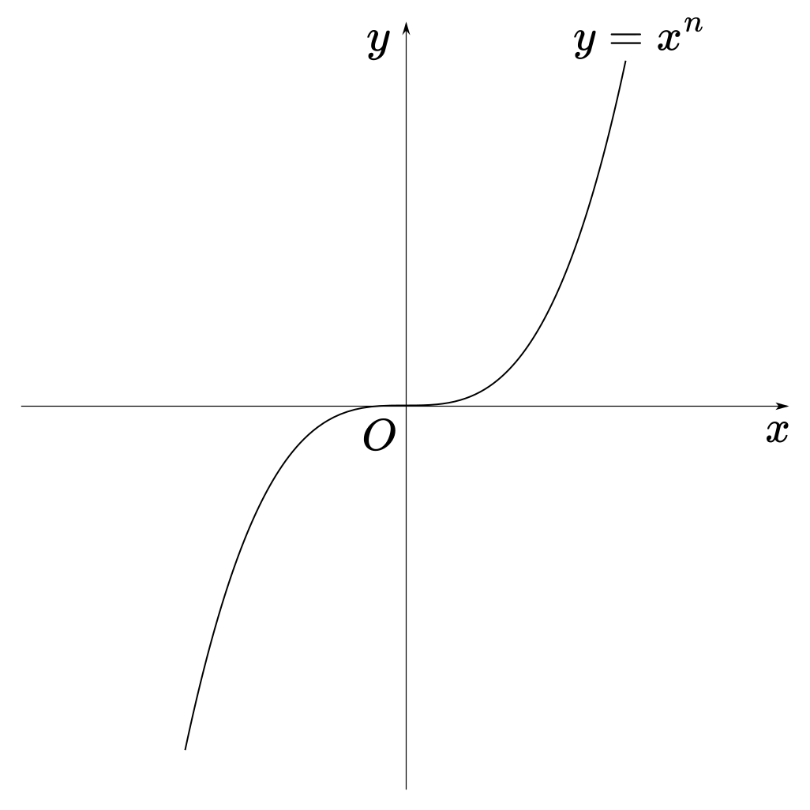
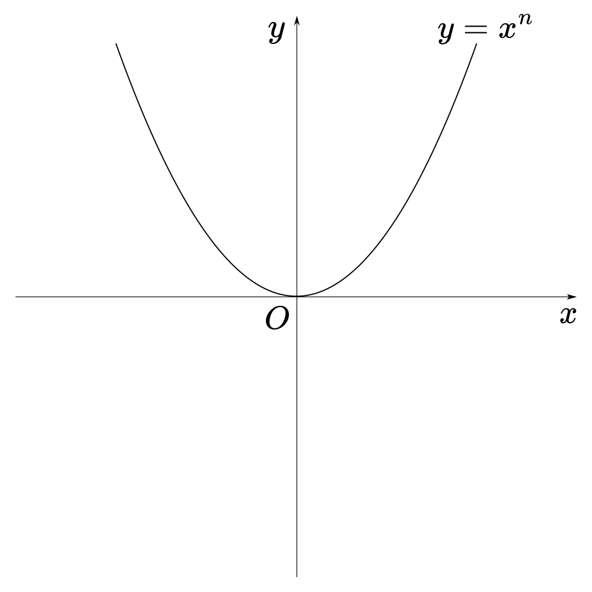

\(1 < n < 10\)인 자연수 \(n\)에 대하여 \(n^{2} - 5n - 6\)의 \(n\)제곱근 중에 음의 실수가 존재하도록 하는 모든 \(n\)의 값의 합을 구하시오.
\(n^{2} - 5n - 6\)의 \(n\)제곱근의 값을 \(x\)라 하면, \(x\)는 방정식 \(x^{n} = n^{2} - 5n - 6\)의 근이다.
이는 곧 \(y = x^{n}\)의 그래프와 \(y = n^{2} - 5n - 6\)의 그래프의 교점의 \(x\)좌표를 가리킨다.
또한 \(y = n^{2} - 5n - 6\)은 \(n\)의 값이 정해짐에 따라 \(y = t\) 꼴의 상수함수가 됨을 알 수 있다.
\(y = x^{n}\)의 그래프의 개형은 \(n\)이 홀수인지 짝수인지에 따라 달라지므로 다음과 같이 경우를 나눈다.
\(i\). \(n\)이 홀수일 때 \(\\\)
\(y = x^{n}\)의 그래프의 개형은 다음과 같다.

